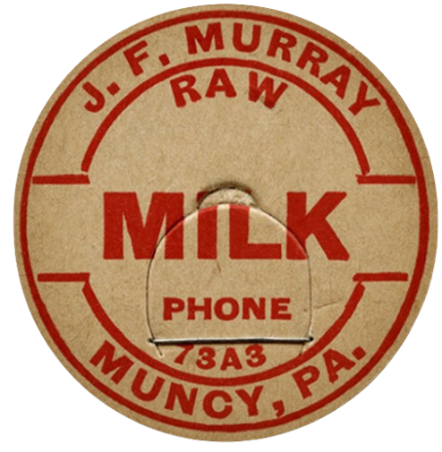

Item: 001
J.F. Murray Raw Milk, Circa 1940s
Excellent, almost mint, vibrant colors
Cardboard, Appx. 1 5/8" in diameter, Private Collection
I found this cap at an antique shop in Wisconsin, near where Cloverdale Creamery was once located. This cap is from a time when adding Vitamin D to milk was becoming more common to combat rickets.
INQUIRE